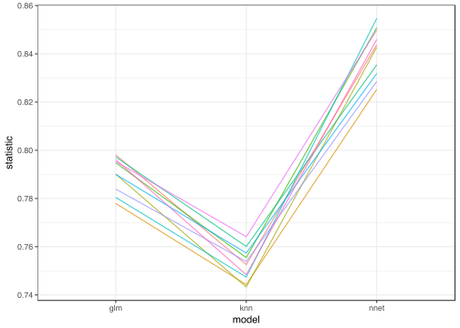
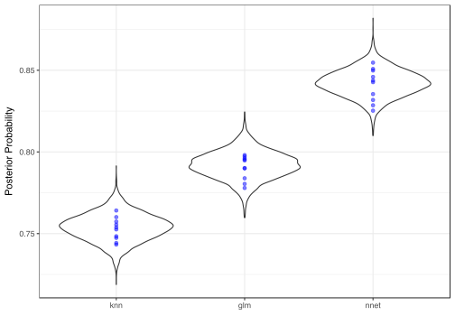
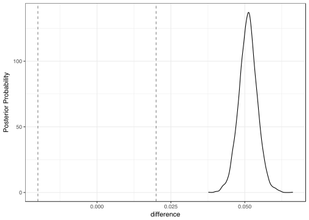

The example that we will use here is from the analysis of a fairly large classification data set using 10-fold cross-validation with three models. Looking at the accuracy values, the differences are pretty clean. For the area under the ROC curve:
library(tidyposterior)
data("precise_example")
library(tidyverse)
rocs <- precise_example %>%
select(id, contains("ROC")) %>%
setNames(tolower(gsub("_ROC$", "", names(.))))
rocs## # 10-fold cross-validation using stratification
## # A tibble: 10 x 4
## id glm knn nnet
## <chr> <dbl> <dbl> <dbl>
## 1 Fold01 0.798 0.753 0.843
## 2 Fold02 0.778 0.744 0.827
## 3 Fold03 0.790 0.743 0.846
## 4 Fold04 0.795 0.755 0.852
## 5 Fold05 0.797 0.760 0.838
## 6 Fold06 0.780 0.747 0.852
## 7 Fold07 0.790 0.757 0.833
## 8 Fold08 0.784 0.754 0.832
## 9 Fold09 0.795 0.764 0.846
## 10 Fold10 0.796 0.748 0.847library(ggplot2)
rocs_stacked <- gather(rocs)
ggplot(rocs_stacked, aes(x = model, y = statistic, group = id, col = id)) +
geom_line(alpha = .75) +
theme(legend.position = "none")
Since the lines are fairly parallel, there is likely to be a strong resample-to-resample effect. Note that the variation is fairly small; the within-model results don’t vary a lot and are not near the ceiling of performance (i.e. an AUC of one). It also seems pretty clear that the models are producing different levels of performance, but we’ll use this package to clarify this. Finally, there seems to be roughly equal variation for each model despite the difference in performance.
If rocs were produced by the rsample package it is ready to use with tidyposterior, which has a method for rset objects.
We will try a simple linear model with Gaussian errors that has a random effect for the resamples so that the within-resample correlation can be estimated. Although the outcome is bounded in the interval [0,1], the variability of these estimates might be precise enough to achieve a well-fitting model.
To fit the model, perf_mod will be used to fit a model using the stan_glmer function in the rstanarm package:
roc_model <- perf_mod(rocs, seed = 2824)## trying deprecated constructor; please alert package maintainer##
## SAMPLING FOR MODEL 'continuous' NOW (CHAIN 1).
##
## Gradient evaluation took 0.000103 seconds
## 1000 transitions using 10 leapfrog steps per transition would take 1.03 seconds.
## Adjust your expectations accordingly!
##
##
## Iteration: 1 / 2000 [ 0%] (Warmup)
## Iteration: 200 / 2000 [ 10%] (Warmup)
## Iteration: 400 / 2000 [ 20%] (Warmup)
## Iteration: 600 / 2000 [ 30%] (Warmup)
## Iteration: 800 / 2000 [ 40%] (Warmup)
## Iteration: 1000 / 2000 [ 50%] (Warmup)
## Iteration: 1001 / 2000 [ 50%] (Sampling)
## Iteration: 1200 / 2000 [ 60%] (Sampling)
## Iteration: 1400 / 2000 [ 70%] (Sampling)
## Iteration: 1600 / 2000 [ 80%] (Sampling)
## Iteration: 1800 / 2000 [ 90%] (Sampling)
## Iteration: 2000 / 2000 [100%] (Sampling)
##
## Elapsed Time: 2.89022 seconds (Warm-up)
## 0.181217 seconds (Sampling)
## 3.07144 seconds (Total)
##
##
## SAMPLING FOR MODEL 'continuous' NOW (CHAIN 2).
##
## Gradient evaluation took 2.4e-05 seconds
## 1000 transitions using 10 leapfrog steps per transition would take 0.24 seconds.
## Adjust your expectations accordingly!
##
##
## Iteration: 1 / 2000 [ 0%] (Warmup)
## Iteration: 200 / 2000 [ 10%] (Warmup)
## Iteration: 400 / 2000 [ 20%] (Warmup)
## Iteration: 600 / 2000 [ 30%] (Warmup)
## Iteration: 800 / 2000 [ 40%] (Warmup)
## Iteration: 1000 / 2000 [ 50%] (Warmup)
## Iteration: 1001 / 2000 [ 50%] (Sampling)
## Iteration: 1200 / 2000 [ 60%] (Sampling)
## Iteration: 1400 / 2000 [ 70%] (Sampling)
## Iteration: 1600 / 2000 [ 80%] (Sampling)
## Iteration: 1800 / 2000 [ 90%] (Sampling)
## Iteration: 2000 / 2000 [100%] (Sampling)
##
## Elapsed Time: 3.3186 seconds (Warm-up)
## 0.257099 seconds (Sampling)
## 3.5757 seconds (Total)
##
##
## SAMPLING FOR MODEL 'continuous' NOW (CHAIN 3).
##
## Gradient evaluation took 2.3e-05 seconds
## 1000 transitions using 10 leapfrog steps per transition would take 0.23 seconds.
## Adjust your expectations accordingly!
##
##
## Iteration: 1 / 2000 [ 0%] (Warmup)
## Iteration: 200 / 2000 [ 10%] (Warmup)
## Iteration: 400 / 2000 [ 20%] (Warmup)
## Iteration: 600 / 2000 [ 30%] (Warmup)
## Iteration: 800 / 2000 [ 40%] (Warmup)
## Iteration: 1000 / 2000 [ 50%] (Warmup)
## Iteration: 1001 / 2000 [ 50%] (Sampling)
## Iteration: 1200 / 2000 [ 60%] (Sampling)
## Iteration: 1400 / 2000 [ 70%] (Sampling)
## Iteration: 1600 / 2000 [ 80%] (Sampling)
## Iteration: 1800 / 2000 [ 90%] (Sampling)
## Iteration: 2000 / 2000 [100%] (Sampling)
##
## Elapsed Time: 3.26629 seconds (Warm-up)
## 0.300275 seconds (Sampling)
## 3.56657 seconds (Total)
##
##
## SAMPLING FOR MODEL 'continuous' NOW (CHAIN 4).
##
## Gradient evaluation took 3.1e-05 seconds
## 1000 transitions using 10 leapfrog steps per transition would take 0.31 seconds.
## Adjust your expectations accordingly!
##
##
## Iteration: 1 / 2000 [ 0%] (Warmup)
## Iteration: 200 / 2000 [ 10%] (Warmup)
## Iteration: 400 / 2000 [ 20%] (Warmup)
## Iteration: 600 / 2000 [ 30%] (Warmup)
## Iteration: 800 / 2000 [ 40%] (Warmup)
## Iteration: 1000 / 2000 [ 50%] (Warmup)
## Iteration: 1001 / 2000 [ 50%] (Sampling)
## Iteration: 1200 / 2000 [ 60%] (Sampling)
## Iteration: 1400 / 2000 [ 70%] (Sampling)
## Iteration: 1600 / 2000 [ 80%] (Sampling)
## Iteration: 1800 / 2000 [ 90%] (Sampling)
## Iteration: 2000 / 2000 [100%] (Sampling)
##
## Elapsed Time: 2.84049 seconds (Warm-up)
## 0.203871 seconds (Sampling)
## 3.04436 seconds (Total)The stan_glmer model is contained in the element roc_model$Bayes_mod:
roc_model$Bayes_mod## stan_glmer
## family: gaussian [identity]
## formula: statistic ~ model + (1 | id)
## observations: 30
## ------
##
## Estimates:
## Median MAD_SD
## (Intercept) 0.8 0.0
## modelknn 0.0 0.0
## modelnnet 0.1 0.0
## sigma 0.0 0.0
##
## Error terms:
## Groups Name Std.Dev.
## id (Intercept) 0.0043
## Residual 0.0070
## Num. levels: id 10
##
## Sample avg. posterior predictive
## distribution of y (X = xbar):
## Median MAD_SD
## mean_PPD 0.8 0.0
##
## ------
## For info on the priors used see help('prior_summary.stanreg').To evaluate the validity of this fit, the shinystan package can be used to generate an interactive assessment of the model results. One other thing that we can do it to examine the posterior distributions to see if they make sense in terms of the range of values.
The tidy function can be used to extract the distributions into a simple data frame:
roc_post <- tidy(roc_model)
head(roc_post)## # A tibble: 6 x 2
## model posterior
## * <chr> <dbl>
## 1 glm 0.793
## 2 glm 0.790
## 3 glm 0.792
## 4 glm 0.789
## 5 glm 0.789
## 6 glm 0.789There is a basic ggplot method for this object and we can overlay the observed statistics for each model:
ggplot(roc_post) +
# Add the observed data to check for consistency
geom_point(
data = rocs_stacked,
aes(x = model, y = statistic),
alpha = .5, col = "blue"
)
These results look fairly reasonable given that we estimated a common variance for each of the models.
We’ll compare the generalized linear model with the neural network. Before doing so, it helps to specify what a real difference between models would be. Suppose that a 2% increase in accuracy was considered to be a substantive results. We can add this into the analysis.
First, we can compute the posterior for the difference in RMSE for the two models (parameterized as nnet-glm):
glm_v_nnet <- contrast_models(roc_model, "nnet", "glm")
head(glm_v_nnet)## difference model_1 model_2
## 1 0.0467 nnet glm
## 2 0.0490 nnet glm
## 3 0.0523 nnet glm
## 4 0.0525 nnet glm
## 5 0.0536 nnet glm
## 6 0.0558 nnet glmThe summary function can be used to quantify this difference. It has an argument called size where we can add our belief about the size of a true difference.
summary(glm_v_nnet, size = 0.02)## # A tibble: 1 x 9
## contrast probability mean lower upper size pract_neg pract_equiv pract_pos
## <chr> <dbl> <dbl> <dbl> <dbl> <dbl> <dbl> <dbl> <dbl>
## 1 nnet vs glm 1 0.0511 0.0459 0.0563 0.02 0 0 1The probability column indicates the proportion of the posterior distribution that is greater than zero. This result indicates that the entire distribution is larger than one. The credible intervals reflect the large difference in the area under the ROC curves for these models.
Before discussing the ROPE estimates, let’s plot the posterior distribution of the differences:
ggplot(glm_v_nnet, size = 0.02)
The column pract_neg reflects the area where the posterior distribution is less than -2% (i.e, practically negative). Similarly, the pract_pos shows that most of the area is greater than 2% which leads us to believe that this is a truly a substantial difference in performance. The pract_equiv reflects how much of the posterior is between [-2%, 2%]. If this were near one, it might indicate that the models are not practically different (based on the yardstick of 2%).